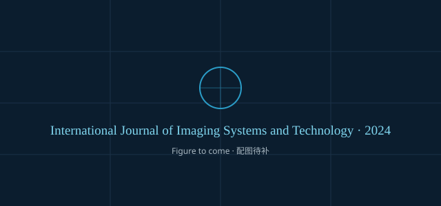
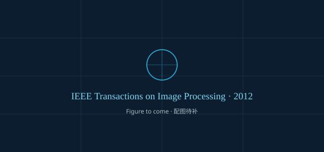
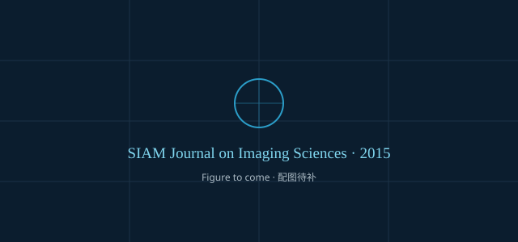
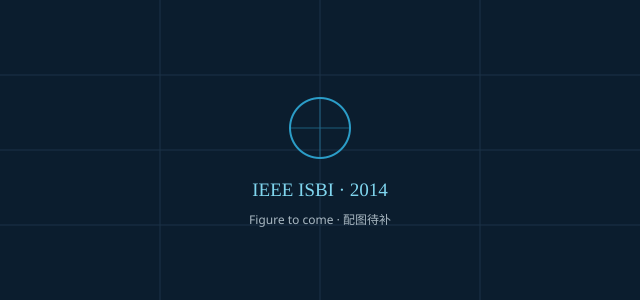

By Method · 02
Deformable Image Registration
Registration from theory to modern generative models: filtering in the diffeomorphism group, Kalman perspectives on multi-atlas fusion, and diffusion-model / Mamba-based deformation vector field generation.
Overview
Registration from theory to modern generative models: filtering in the diffeomorphism group, Kalman perspectives on multi-atlas fusion, and diffusion-model / Mamba-based deformation vector field generation.
- Diffusion + Mamba networks for deformation vector fields (IJIST 2024)
- Point-set registration in the diffeomorphism group (IEEE TIP 2012)
- Kalman filtering perspective for multi-atlas segmentation (SIAM 2015)
04 · Selected work
Selected work
Each card: figure on top, key points below.
01

Enhanced Deformation Vector Field Generation With Diffusion Models and Mamba Based Network for Registration Performance Enhancement
International Journal of Imaging Systems and Technology · 2024
- Diffusion models and Mamba-based networks generate deformation vector fields.
- Measurable gains in registration performance.
02

Filtering in the diffeomorphism group and the registration of point sets
IEEE Transactions on Image Processing · 2012
- Registration of point sets via filtering in the diffeomorphism group.
- Theoretical grounding for smooth, invertible transformations.
03

A Kalman filtering perspective for multi-atlas segmentation
SIAM Journal on Imaging Sciences · 2015
- Multi-atlas segmentation cast as a Kalman filtering problem.
- Principled fusion of atlas label propagation.
04

Successive Convex Optimization for Point Set Registration
IEEE ISBI · 2014
- Successive convex optimization for non-rigid point set registration.
- Efficient solver with convergence guarantees.